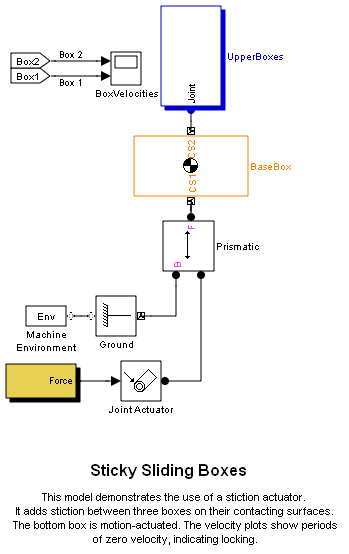
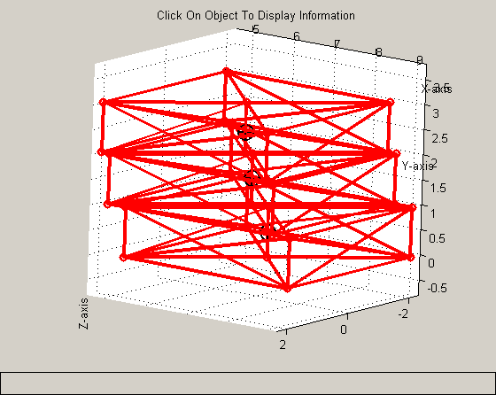

Sticky Sliding Boxes
A box sliding on top of another box with sticky friction.
This model demonstrates the use of a stiction actuator. It adds stiction between three boxes on their contacting surfaces. The bottom box is motion-actuated. The velocity plots show periods of zero velocity, indicating locking.
 